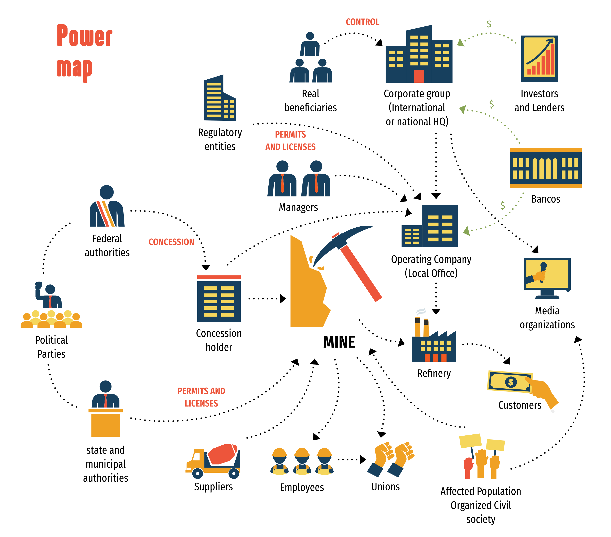

The PODER team offers you this corporate research manual, which seeks to reinforce strategies for the defense and promotion of human rights, through the use of this tool known as corporate research.
Over these 15 years, corporate research has helped us to identify and address voids of information so that communities in possession of natural resources, working people, and civil society activists can demand and protect their rights and their territories.

Corporate research is a set of research strategies, tools, and methodologies that allow us to access information related to companies and their revenues; their technologies; their projects; their partners; and their lenders, investors, and institutional allies.
When we find such information and begin to understand and connect all its parts, then we are creating the conditions to conduct an analysis of the political, economic, and productive structures of a company, a project, a corporate group, or any of their components.
Corporate research, in addition to helping us follow the money trail, also helps us identify who makes decisions which, at some point, result in negative impact on communities, organizations, the environment, culture, and labor rights, among others.
In PODER, we order all this information on a Cartesian graph:
Identify the chain of decisions and responsibilities within a corporation and/or project. This means that we move downward looking for the actors that have the most power in decisions but also those that make the most money in the final accounting. On this axis we find: beneficial owners, investors, creditors, managers, subsidiaries, and working people.
Identify how the company works and its production/operating techniques, and takes us from left to right to locate its providers of raw materials, services, technology, security, transport, marketing, and legal services, until we arrive at the main markets where it sells and its customers.
Reveal the structures of power behind private projects that do not respect human rights and have harmful environmental and health impact.
Ensure that corporations fulfill their obligations and inform the population at large (not only their investors) of their activities, impacts, payment of taxes, donations, and agreements with communities.
Pressure corporations (not just governments) to account for their actions and respect the human rights of persons and communities affected by their activities.
Build community tools and an informed and strong social movement that defends human rights, territories, and the environment.
Make information available to communities, defenders, and grassroots organizations in the form of open data, maps, and analytical documents on strategic industries.
Develop, train, and counsel communities, organizations, and social movements interested in the defense of human rights violated by corporate activities.
A corporation is an entity with legal identity (legal entity) whose purpose is to engage in commercial activities.
There are different types of corporations depending on their line of business; their size; whether they are public or private; if they are independent or part of a corporate group (holding); if they are joint ventures; if they have debts; if their employees belong to a union.


The brand is important because it is the company’s image; the brand should always be “clean” and for that the company must show that it complies with the law, protects its workforce, does not pollute, and performs beneficial works in the communities where it operates.


It is also important to consider that there is very useful and valuable information that companies DO NOT want to divulge or share:
An example of this is tax information since companies report how much they pay in taxes but not how much governments discount or return to them. Such information is reserved as “tax secrecy.”
The same occurs with loans (bank secrecy), names of investors (financial secrecy), and information on companies’ operating processes (industrial secrecy).
Another hotly debated topic is the identity of their beneficial owners, those who receive the largest sums of money from their sales and investments.
The same occurs with quasi-fiscal expenses, which are all the payments or donations companies make to communities in currency or in kind that do not generate a tax receipt but, informally, function as community license payments.
International mechanisms for responsible business conduct
And although there are several efforts to establish standards and offer guidelines for corporations, enforcement remains weak and companies have not incorporated them in their day-to-day operations, especially on issues of environment; human rights; and the prior, free, and informed consent of communities.
Without forgetting that their policies on gender maybe highly superficial and lack a human rights perspective.

To start, we must take into account the conditions necessary to proceed. This means that much of the public information is easier to obtain online, for which we need to have access to a device (PC, tablet, or smartphone) with an internet connection.
Our methodology divides the information along two axes: the first is what we call vertical analysis and the second horizontal analysis.
Vertical analysis answers two questions:
What is the money trail? and;
What is the chain of command / responsibility?
Horizontal analysis answers the questions:
How is the production chain structured? What are the main business partners? Where on the supply chain are the main risks in relation to environment, transparency, corruption, corporate capture, and security located?
Three things bear mentioning:

To start with the vertical analysis of a company, we propose using the following Corporate Research FORM/TABLE:
For the horizontal analysis of a company, you can follow the list of data below:
-
It is important to bear in mind that each industry and each company develops its own supply chain models depending on its context, resources, and normative frameworks.
Below, we show an example of supply chain analysis for Philip Morris IQOS heated tobacco devices from our website WORLD-LESS FUTURE.
For horizontal analysis of a company, you can follow the list of data below:
Public Registry of Commerce (rpc.economia.gob.mx)
Environmental Authority (Semarnat) (www.gob.mx/semarnat)
Commercial Authority (Economy) (www.gob.mx/se/)
Tax Authority (SAT) (usaspending.gov)
Federal Authority (ASF) (www.asf.gob.mx)
Electoral Authority (fec.gov)
Authorityon Transparency (inai.gob.mx)
Copyright / Registered
Inter-American Development Bank (mydata.iadb.org)
International Monetary Fund (imf.org)
European Investment Bank (eib.org)
World Trade Organization (wto.org)
Ecuator Principles (equator-principles.com)
Principles for Responsible Investment (unpri.org)
GlobalCompact (unglobalcompact.org)
Chambers of Commerce
Company websites
Interviews with key people in management
Mexican Securities Exchange (https://www.bmv.com.mx/)
Securities and Exchange Commission (sec.gov) [EE.UU.]
System for Electronic Data Analysis and Retrieval (SEDAR +) [Canada].
Wall Street Journal
Standard & Poor’s
Bloomberg.com
EnergyAndCapital.com
FundResearch.fidelity.com
GlobalEnergyMonitor.org
QuienEsQuien.wiki
OpenSecrets.org
OpenCorporates.com
CIEDH
SourceWatch.org
CorpWatch.org
LittleSis.org
Linkedin
Facebook
X (Twitter)
TikTok
To start searching for information on a company, you can use the following list of data:
To analyze our information, first we need to copy out and order the data collected. To do that, we can follow the diagrams suggested in research sections I and II.
Depending on our research needs, we will choose our analysis tools. Many of them may be complementary but the most important thing is that they help us tell our own stories.
Remember that analysis goes from simple to complex. Our firs questions usually are: What is the relationship between this company and this other one? Or why did the parent company found this other in a joint venture?
As we advance, we will develop more complex questions that relate earnings with key persons, with contract prices, and under license from certain authorities.
You can see an example of a Power Map extracted from our own website.
The above map is an example of the community cartography tool extracted from the microsite Sierra de Apuestas.
1 First, we need to ask ourselves who our audience is. In other words, if we want to share our information with actors beyond our community, allies, authorities, and corporations, among others.
2 Second, we need to ask ourselves what impact we want to achieve with our target audience? This refers to the type of reaction or conduct we want to trigger in our audiences.
3 Third, it is important to ask ourselves what is the best format to present our information to produce the desired impact on our target audience. And that means whether we want to present our information in the form of a printed or digital report or in an infogram, table or graph, or video. Depending on the financial capacity and skills of our community, we can consider digital formats such as websites or informative videos, podcasts, and reels.
4 Fourth, we can consider channels to divulge our research depending on the intended format, audience, and impact. This means that we have to know what channels are best to most effectively reach our target audience.
5 Last, and depending on our availability of time and tools, it is desirable to track or monitor the reach of our communication.
We want to reiterate that, in the chain of actions that make up PODER’s methodology, corporate research is complemented by various tools of:
Domestic and international impact (see Annex II)
Community Organization
Communication
Strategic Litigation
Collective Care (protection)
If you want to know more about these tools and receive feedback on your research or send us comments to improve this manual, you can write to info@poderlatam.org.
We also want to remind you that PODER is a non-profit organization, and if you want to invite us to give this workshop for your community or local organization, we offer it at no cost, provided our training is used to defend rights, territory, and resources against abuses of corporate power.
We hope this has been useful for you and your community / collective / union / organization.